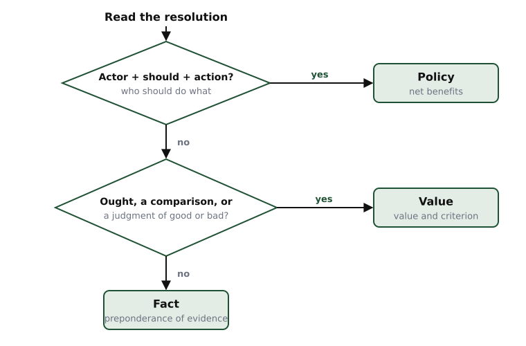

Chapter 3: Three Kinds of Resolution
In this chapter
- Objectives
- Key terms
- The idea
- 3.1 The resolution decides the debate you are having
- 3.2 Fact resolutions
- 3.3 Value resolutions
- 3.4 Policy resolutions
- 3.5 One subject, three resolutions
- 3.6 Burdens and presumption
- 3.7 Defining your terms
- Say it
- Worked examples
- A campus question
- An international question
- How a judge weighs it
- Common mistakes
- Practice
- Check questions
Move: Build. Builds on: Chapter 2. Where you use it: the first minutes of preparation for any debate, and the opening of every affirmative case.
Objectives
By the end of this chapter you should be able to:
- Identify whether a resolution is fact, value or policy from its wording.
- Name the criterion a judge uses to decide each kind of debate.
- Write a fact, a value and a policy resolution on the same subject.
- Explain the burden of proof, the burden of rejoinder and presumption.
- Define the key terms of a resolution using a real, citable source.
Key terms
Resolution, fact resolution, value resolution, policy resolution, criterion, preponderance of evidence, value, value criterion, net benefits, stasis, status quo, burden of proof, burden of rejoinder, presumption.
The idea
3.1 The resolution decides the debate you are having
Every debate starts with a resolution: a single sentence that the affirmative argues for and the negative argues against. Resolutions come in three kinds, and the most important thing to know about them is this: the kind of resolution determines the kind of debate. A fact resolution produces a debate about what is true. A value resolution produces a debate about what matters most. A policy resolution produces a debate about what should be done. Each kind is judged by a different standard and built from different structures.
So the first thing you do with any resolution is identify which kind it is. Resolutions are identified by their wording.
3.2 Fact resolutions
A fact resolution asks whether a statement is true. You should be able to settle it, at least in principle, by looking at the world, without deciding what you value.
Two markers identify a fact resolution:
- A verb of being or prediction: is, are, does, has, have or will.
- A call to evaluate whether something is empirically true.
Examples: "Climate change is irreversible." "Free bus fares increase ridership." "Students who start at a community college are as likely to earn a bachelor's degree as those who start at a university."
Fact debates are decided by preponderance of evidence: the side with the better quantity and quality of evidence and reasoning wins.
3.3 Value resolutions
A value resolution asks for a judgment about what is good, better or more important. Listing evidence is not enough to win one, because the resolution asks you to decide what matters most, and evidence alone cannot settle that.
A value resolution may have any of three markers:
- The word ought.
- Language of prioritization or preference: "more than," "over," "preferable to," "does more good than harm."
- An evaluative judgment that cannot be proven true or false by evidence alone: "good," "just," "harmful."
Examples: "Learning ought to be valued over grades." "Affordability ought to matter more than prestige in choosing a college." "Lowering the voting age does more good than harm."
Value debates are unusual: part of the debate is about how to decide the debate. Each side proposes a value, the principle that matters most, and a value criterion, the way to measure whether that value is achieved. For example, a side might take justice as its value and minimizing wrongful convictions as its criterion. Two sides can agree on the value and disagree on how to measure it, or disagree on both. Chapter 13 covers this in full.
3.4 Policy resolutions
A policy resolution asks whether an action should be taken. Policy resolutions are the easiest to identify, because almost all of them follow one formula: who should do what?
- Who: an actor, the agent that would take the action. "The United States federal government," "California," "this college."
- Should: the call to action.
- Do what: the action itself. "Establish a universal basic income," "make its public buses free to ride."
Examples: "This city should make its public buses free to ride." "The United States should substantially increase its foreign aid for global public health."
The affirmative in a policy debate defends a specific plan, one example of the resolution in action. If the resolution says the federal government should raise the minimum wage, the affirmative might defend raising it to \$20 an hour. The plan has to be an example of the resolution: a plan to create a universal basic income does not prove the minimum wage should be raised, even if it addresses the same problem. Chapter 15 covers what makes a plan legitimate.
Policy debates are decided by net benefits: the judge adds up the advantages and disadvantages of the plan and votes for whichever world, with the plan or without it, is better.
| Kind | Asks | Markers | Decided by |
|---|---|---|---|
| Fact | What is true? | is, are, does, has, will | Preponderance of evidence |
| Value | What matters most? | ought; comparison or preference; an evaluative word | The value and value criterion the debaters establish |
| Policy | What should be done? | An actor + should + an action | Net benefits |

Sometimes a resolution could be read as more than one kind. "The United States ought to prioritize renewable energy" has ought, which suggests value, but also names an actor taking an action, which suggests policy. When that happens, the affirmative's job is to argue for its reading using the markers above, and the negative may argue for a different reading.
3.5 One subject, three resolutions
Any subject can be debated all three ways, and seeing that is the best way to understand the difference between them.
| Kind | Resolution on choosing a college | Resolution on universal basic income |
|---|---|---|
| Fact | Students who start at a community college are as likely to earn a bachelor's degree as those who start at a university. | A universal basic income would reduce poverty in the United States. |
| Value | Affordability ought to matter more than prestige in choosing a college. | Economic security ought to be valued over economic growth. |
| Policy | A high school graduate should start at a community college instead of a university. | The United States federal government should establish a universal basic income. |
The three are connected. Settling the fact question tells you what each path leads to. Settling the value question tells you which of those outcomes matters more. Only then can you decide the policy question with confidence. This book follows the same order: fact debate in Part II, value debate in Part IV and policy debate in Part V, each building on the last.
This idea is ancient. Classical rhetoricians called the point a dispute turns on its stasis, and they listed the questions in order: does the thing exist (conjecture), what is it (definition), is it good or bad (quality), and what should be done about it (procedure). Two thousand years later, debaters still find that most disagreements are really about one of those four questions. When you are stuck in an argument, ask which one you are actually disagreeing about.
3.6 Burdens and presumption
Every debate has rules about who has to prove what. Three ideas, all borrowed from law and from the nineteenth-century rhetorician Richard Whately, govern the whole book.
- The burden of proof belongs to the affirmative. The affirmative is asking the judge to accept something new, so it has to give reasons. If the affirmative gives no reasons, the negative does not need to say anything.
- The burden of rejoinder belongs to whoever speaks next. Once a side has made an argument, the other side has to answer it or accept it. An argument nobody answers is treated as true for the rest of the debate.
- Presumption is the default outcome if nobody proves anything. It usually favors the negative, because the negative is defending the status quo, the world as it is now. If the affirmative's case and the negative's answers come out even, the judge votes negative, because the affirmative did not meet its burden. As Whately put it, presumption favors what already exists.
These ideas explain how the Scale from Chapter 4 works. If the judge ends the debate with nothing on either side, or with both sides exactly balanced, presumption breaks the tie.
3.7 Defining your terms
The affirmative is expected to define any term in the resolution that a reasonable judge might not understand, or that could be understood more than one way. You do not need to define every word, and often you need to define none. But when a term matters to the debate, define it, and cite where your definition comes from.
Use a real source: a dictionary, a statute, an agency or a scholar in the field. "According to the Merriam-Webster dictionary, ..." is fine, as long as the definition you read is actually in that dictionary. A made-up definition with a dictionary's name attached is fabricated evidence, and in competition it can lose you the round. Chapter 9 covers evidence ethics in detail.
Definitions also shape the debate. If the resolution says "public transit" and you define it to include only buses, you have narrowed what the negative can argue about. Doing that fairly is part of the affirmative's job; doing it unfairly invites a topicality argument, which you will meet in Chapter 16.
Say it
The first part of an affirmative case, sometimes called the top of case, uses these frames:
- "The resolution today is ___."
- "This is a ___ resolution, because it ___." For example: "This is a policy resolution, because it names an actor, uses the word should, and calls for a specific action."
- "I define ___ as ___, according to ___."
- "The judge should decide this debate by ___."
Spoken, a top of case for a value resolution sounds like this: "The resolution today is that affordability ought to matter more than prestige in choosing a college. This is a value resolution: it uses the word ought and asks you to rank two considerations against each other. I define prestige as a school's reputation and selectivity, the factors measured in national rankings. I will argue that you should decide this debate by asking which factor does more to improve a student's life after graduation."
Worked examples
A campus question
Subject: grading in general education courses.
- Fact: "Pass/no pass grading reduces student stress." The verb reduces makes a claim that evidence can test. Preponderance of evidence decides it.
- Value: "Learning ought to be valued over grades." The word ought and the comparison make it a value resolution. The sides will need values and criteria.
- Policy: "This college should replace letter grades with pass/no pass in general education courses." Actor (this college), should, action (replace letter grades). Net benefits decides it.
The affirmative in the policy debate carries the burden of proof. If it shows only that some students prefer pass/no pass, without showing any benefit to adopting it, presumption favors keeping letter grades.
An international question
Subject: foreign aid for global health.
- Fact: "Foreign health aid saves more lives per dollar than domestic health spending." Testable by evidence.
- Value: "A nation's obligations to its own citizens ought to outweigh its obligations abroad." A ranking of two obligations; a value debate.
- Policy: "The United States should substantially increase its foreign aid for global public health." The affirmative's plan would need to say by how much and for what programs, and to define "substantially" in a way it can defend.
How a judge weighs it
A judge decides the debate by the criterion that fits the resolution: preponderance of evidence for fact, the winning value and criterion for value, and net benefits for policy. If the affirmative misidentifies the resolution, for example by arguing a policy resolution as if it were a value question, the judge may hold it to the wrong standard, or accept the negative's argument that it never addressed the resolution at all. And if neither side clearly wins, the judge votes on presumption, which usually means negative.
Common mistakes
- Ignoring the resolution's wording. The kind of resolution comes from the words on the page, not from the subject.
- Choosing a value that repeats the resolution. If the resolution says learning ought to be valued over grades, "learning" as your value just restates your side. Chapter 13 explains this trap.
- Defending a plan that is not an example of the resolution. A plan that addresses the same problem by a different action does not prove the resolution.
- Inventing definitions. Cite real sources, word for word.
- Forgetting the burden of proof. The affirmative cannot win just because the negative was weak. It has to prove something.
Practice
Drill: resolution sort (10 minutes, individually, then pairs). Classify each of these as fact, value or policy, and underline the words that tell you: (1) Social media does more harm than good for teenagers. (2) Remote work will become the norm for office jobs. (3) The state should require financial literacy courses for high school graduation. (4) Privacy ought to be valued over convenience. (5) Hamsters make good pets. (6) The college library has enough study space. Compare answers with a partner and argue out any you disagree on.
Writing exercise. Choose a subject you care about. Write a fact, a value and a policy resolution on it. For each, write one sentence naming the criterion the judge would use and one sentence explaining how settling the earlier resolutions would help decide the later ones.
Check questions
Choose an answer to see feedback. Nothing is recorded.
1. "Free bus fares increase ridership" is which kind of resolution?
2. Which criterion decides a policy debate?
3. Which side carries the burden of proof?
4. If both sides' arguments come out exactly even, the judge usually votes:
5. Which is the best way to define a key term in a resolution?